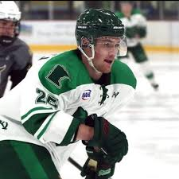

Hockey
Like I said earlier, I am a freshamn on the University of Maine hockey team.
The first time that I stepped foot on the ice was when I was 3 on a lake in Sweden.
When I turned 5 I sterted playing on a outdoor rink for my hometown team. It was amazing
playing under the moon and stars with all my friends from the area. I left that team when
I was 10 to play for a better one 30 minutes away. I had a great time and developed a lot
during the next 5 years and decided to move away from home to play in the US. At the age of
15 I moved to Minnesota to play highschool hockey. I spent 4 great years there and made memories
I will carry with me for the rest of my life. After graduating I spent the following 2 years
playing junior hockey. Almost all hockey players that want to play division hockey does so.
The reason for it is to get bigger, faster and stronger. It was long journey getting to Maine
but I could not be happier.
